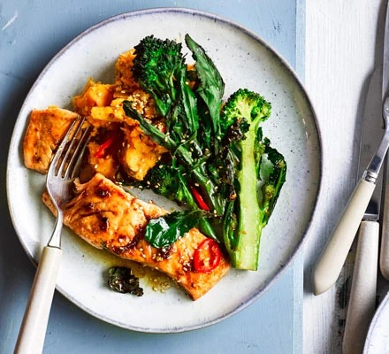

Sesame salmon, purple sprouting broccoli & sweet potato mash

Description
Try this Asian-inspired salmon supper with a nutty sesame dressing, crisp veg and comforting sweet potato mash. It's healthy, low-calorie and rich in omega-3
Ingredients
- 1 ½ tbsp sesame oil
- 1 tbsp low-salt soy sauce
- thumb-sized piece ginger, grated
- 1 garlic clove, crushed
- 1 tsp honey
- 2 sweet potatoes, scrubbed and cut into wedges
- 1 lime, cut into wedges
- 2 boneless skinless salmon fillets
- 250g purple sprouting broccoli
- 1 tbsp sesame seeds
- 1 red chilli, thinly sliced (deseeded if you don't like it too hot)
Method
- Heat oven to 200C/180 fan/ gas 6 and line a baking tray with parchment. Mix together 1/2 tbsp sesame oil, the soy, ginger, garlic and honey. Put the sweet potato wedges, skin and all, into a glass bowl with the lime wedges. Cover with cling film and microwave on high for 12-14 mins until completely soft.
- Meanwhile, spread the broccoli and salmon out on the baking tray. Spoon over the marinade and season. Roast in the oven for 10-12 mins, then sprinkle over the sesame seeds.
- Remove the lime wedges and roughly mash the sweet potato using a fork. Mix in the remaining sesame oil, the chilli and some seasoning. Divide between plates, along with the salmon and broccoli.
Reurn to main page